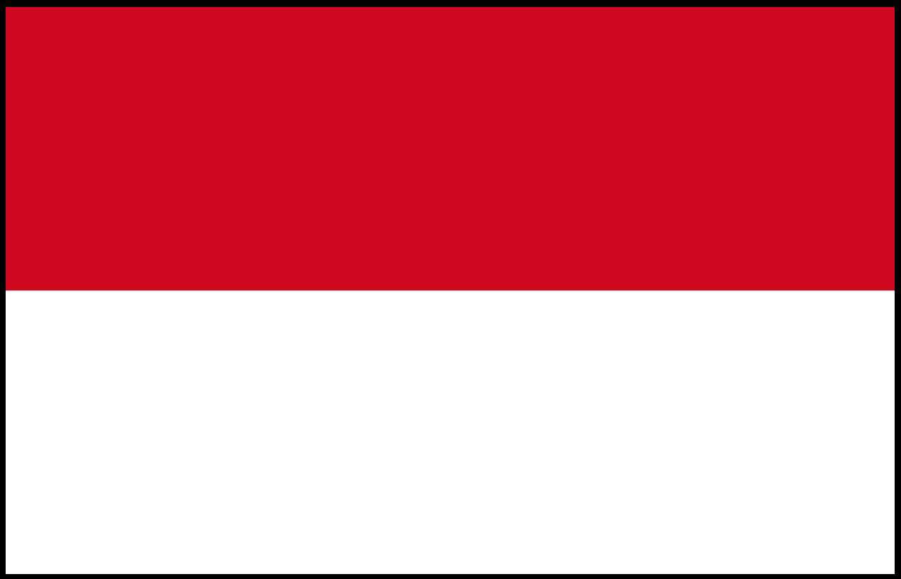
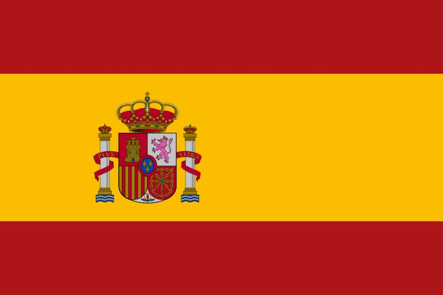
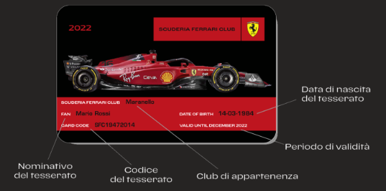

Charles Leclerc

Nationality: Monaco
About Charles Leclerc
(Charles Marc Hervé Perceval Leclerc) (French pronunciation: [ʃaʁl ləklɛʁ]; born 16 October 1997) is a Monégasque racing driver, currently racing in Formula One for Scuderia Ferrari. Leclerc won the GP3 Series championship in 2016 and the FIA Formula 2 Championship in 2017. Leclerc made his Formula One debut in 2018 for Sauber, a team affiliated with Ferrari, for which he was part of the Ferrari Driver Academy. With Sauber having finished last the year before, Leclerc led the charge to improve its finishing position in the constructors' championship to eighth, and was the higher ranked of the two Sauber drivers.Starting in 2019 and contracted until the end of the 2024 season, Leclerc drives for Ferrari. He became the second-youngest driver to qualify on pole position in Formula One at the 2019 Bahrain Grand Prix. The 2019 season also saw Leclerc take his first career win in Belgium. He won the Pole Trophy in the 2019 season, becoming the youngest driver to win it. After two winless seasons with uncompetive cars, Ferrari recovered to end Leclerc's win drought in the 2022 opener and saw him building an early championship lead.
Nationality: Spanish
Carlos Sainz Jr.
About Carlos Sainz Jr.
Carlos Sainz Vázquez de Castro (Spanish pronunciation: [ˈkaɾlos ˈsajnθ ˈβaθkeθ ðe ˈkastɾo] (listen); born 1 September 1994), otherwise known as Carlos Sainz Jr. or simply Carlos Sainz, is a Spanish racing driver currently competing in Formula One for Scuderia Ferrari. He is the son of Carlos Sainz, a double World Rally Champion, and the nephew of rally driver Antonio Sainz. In 2012, Sainz raced in the British and European Formula 3 championships for Carlin. He raced for DAMS in the 2014 Formula Renault 3.5 season, winning the championship before moving to F1 with Toro Rosso. Sainz moved to McLaren for the 2019 season, while at the same time ending his contract with Red Bull Racing. At the 2019 Brazilian Grand Prix Sainz took his maiden Formula One podium finish with third. Sainz moved to Ferrari at the end of the 2020 season.

Scuderia Ferrari is always with you
This is the true fan’s CARD that you’ll receive, along with the driver cards